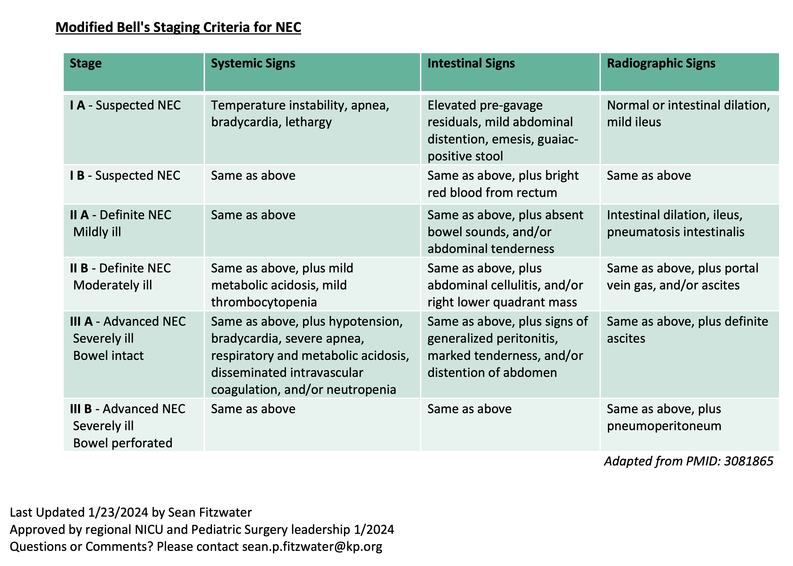
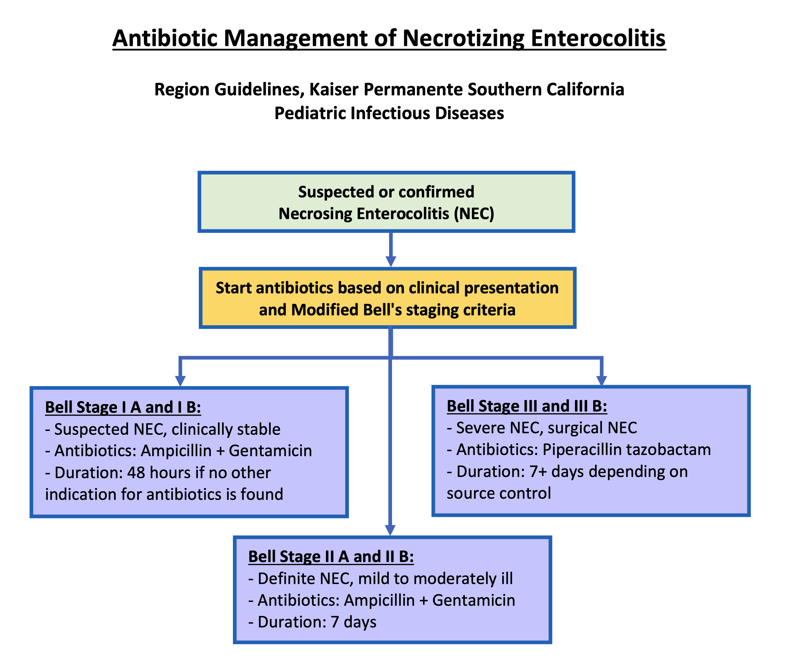

13 Gastroenterology
13.1 Cholestasis
Workup
Imaging
- Abdominal US
- Spine x-ray for butterfly vertebrae (50-80% thoracic or lumbar spine in Alagille syndrome)
- HIDA scan (5 days of phenobarbital 5mg/kg/day bid)
Labs
- Total/direct bilirubin
- liver function tests (AST/ALT, GGT, ALP, INR, PTT)
- TSH
- Urine organic acid
- Plasma amino acid
- Acylcarnitine profile
- AM Cortisol
- Alpha-1-antitrypsin
- bile acids
- urine/blood CMV
- urine reducing substance
- immunoreactive trypsinogen
- HSVPCR
- UA and urine culture
Treatment
- Actigall (ursodiol): 20-30mg/kg/day
- ADEK vitamins
13.2 Gastro-Esophageal Reflux Disease (GERD)
Diagnosis
- Flex laryngoscope showing erosion in the larynx
- pH meter study
- Frequent emesis resulting in poor weight gain / malnurishment
Treatment
- Omeprazole 0.5-1.5mg/kg/dose once daily
13.3 Necrotizing Enterocolitis (NEC)
Moditified Bell’s criteria

Workup
- CBC/D
- CRP
- Chemistry
- Blood Culture - Repeat culture at time of surgery if an infection is present
- Serial KUB
Antibiotics Use

Further Considerations
- Antibiotic dosing should be based on the patients age, weight, and gestation age.
- If clinical worsening occurs the Bell stage classification should be re-evaluated.
- If peritonitis or purulence is noted during surgery, consider sending cultures to guide antibiotic management.
- Antibiotics should be modified based on blood culture or sterile site culture results.
- Patients with bacteremia typically require evaluation for meningitis with a lumbar puncture. If meningitis is confirmed Pediatric Infectious Diseases should be contacted.
- Duration of antibiotics for severe and perforated NEC is dependent on extent of infection, severity of illness, and if adequate source control was obtained.
- For worsening severity of illness despite surgical management and treatment with Piperacillin tazobactam, consider discussing broadening antibiotic therapy with Pediatric Infectious Diseases.
- Consider using ceftazidime in place of gentamicin in patients with recent or extensive prior exposure to gentamicin.
- Consider starting vancomycin in septic patients with central lines to cover methicillin resistant Staphylococcus species. If started, consider stopping vancomycin if cultures are negative at 48 hours.
Resources
Dr. Fitzwater’s Presentation Slides (Right clikc to save link as…)